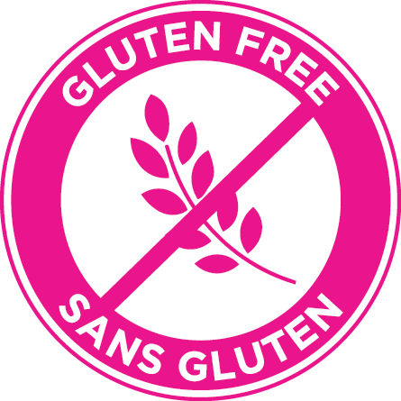

Introducing Gluten-free toppings!

To support your choice of health and lifestyle, we have now included gluten-free options in our range of toppings. From biscuits to waffles, candies and more you can now enjoy our milkshakes without slacking on your diet.
With dietary accomadations on the rise, we here at MilkshakeBar take your concerns into care. Made from wholesome ingredients and imported from the best brands in the market, don't forget to try something new and delicious today!
All products are certified gluten-free and we handle them carefully and separately. Please feel free to contact to us for more information.
Sugar-free Shakes

Health conscious? Dietry restrictions? Now, we use sugar-free ice creams and toppings as per your request without compromising on our authentic MilkshakeBar taste!